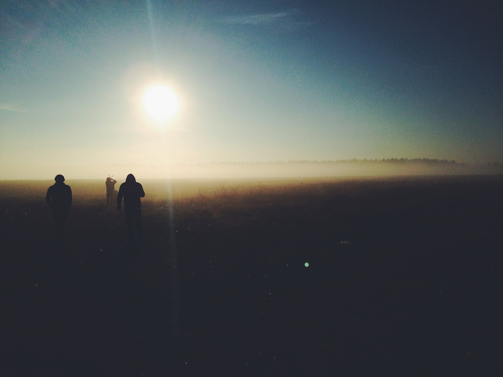

Шайтан-болото
Экспедиция в аномалию
Зачем ехать в Шайтан-Болото
«Батенька-мобиль» ныряет в новую волну тумана — серая хмарь преследует нас с самого утра. Кто-то говорит, что уже видел полуразрушенный дом, который проносится мимо пятый раз, но он не уверен, никто ни в чем не уверен. В воздухе пахнет дымом, но туман не может пахнуть дымом, пусть и похож на него, этого не может быть. Это ненормально.
В семь утра трасса М-10 похожа на фильм Mad Max — только вместо пустыни вокруг тянутся поля и подлески. На заправке никого нет, только серый мужчина за стойкой подает серые пельмени. Мы решаем выйти из машины все вместе, уходим в поле. Всё усеяно сорняками, на их цветах искрится росинками паутина, к ногам подбирается холод. Возможно, мы уже в аномалии, уже тонем в Шайтан-болоте, возможно мы уже утонули и стали его частью, возможно, мы мертвы. Машина заводится, бак полон. В белый шум почти отключившегося радио вдруг врывается Stayin Alive. Лесневский ржет.
Какие есть на свете аномальные зоны в Новгородской области? Полно! Равнина Погибели! Мясной бор! Хроноаномалия! Языческое святилище! Аракчеевские казармы, где барражируют НЛО — там же разгуливают приведения невинноубиенных, а ночами местных обитателей будоражат воем и подвыванием сказочные существа. Наконец, Чёртово или Шайтан-болото — Блудное место, Крестецкий район.
Туда мы и едем — к Сатане в гости, прихватив для храбрости пару болотников “Псков-полимер”. Кто-то из нас должен будет утонуть - без жертвоприношения вся поездка не имеет смысла.
Безымянная деревня на самом краю Шайтан-болота, когда-то крепостная и зажиточная, постепенно умирает. Где-то здесь, за углом бревенчатого сарая начинается топь, а там, чуть дальше, водятся кабаны и растут гигантские мухоморы — но это их сугубо личное дело, которое мало кого касается. Местные живут в маленьких серых домах и ведут мелкое хозяйство — делить людям нечего. «Шайтан-болото» превращается в милое сердцу «г’ажье», и жизнь течёт вперёд размеренно, без страхов и без надежды, словно медленная вода безымянной реки.
Мы находим остов барского дома, мимо которого ведет коров старый пастух. Он говорит, где найти сердце Шайтан-болота, но никто ему не верит - это уже пятый человек, которого мы спрашиваем, все указывают в разные стороны. Мы останавливаемся на ночлег в гостевом доме у Алёны - владелицы турбазы “Алёна”. Она старше своей фотографии на заборе лет на 20, но всем всё равно. Сгущаются сумерки. Тёмный лес Шайтан-болота шумит и шевелится, оттуда на нас глядят заблудшие старушки, лесники, солдаты десятка войн и те, кто так и не преодолел невидимую стену.
Печальнее всего — не утонуть в болоте, когда изо всех сил пытаешься это сделать. С самурайским спокойствием уходишь по пояс болотников «Псков-полимер» в тёмную, дурнопахнущую жижу — и обнаруживаешь себя в отличном самочувствии. Да, чуть мёрзнут ноги — но ведь это от того, что носки сползли и сбились в потные валики. Жаловаться нечего. Вокруг роятся комары и клещи, но уже не до них — болото успокаивает, почти не тянет вниз — просто не хочет отпускать.
- Во-первых, это все дико весело
- Во-вторых, кто же не любит быстрой езды?
- В-третьих, это все весьма весело, не так ли?
- В-четвертых, ну почему же нет?
- В-пятых, обожаем ездить в Аномальные зоны
Печальнее всего — не утонуть в болоте, когда изо всех сил пытаешься это сделать. С самурайским спокойствием уходишь по пояс болотников «Псков-полимер» в тёмную, дурнопахнущую жижу — и обнаруживаешь себя в отличном самочувствии. Да, чуть мёрзнут ноги — но ведь это от того, что носки сползли и сбились в потные валики. Жаловаться нечего. Вокруг роятся комары и клещи, но уже не до них — болото успокаивает, почти не тянет вниз — просто не хочет отпускать.
Не верьте мифу о том, что сопротивление бесполезно. При желании любая топь взбивается ногами, как свежее масло — надеюсь, адепты Nike running и прочие любители спортивных сект по достоинству оценят этот нехитрый тренажер. Тонуть и выбираться из болота можно хоть сутки напролет. Главное в этом деле — герметичность.
В тишине леса не слышно шагов — густой мох душит звуки, так что редкое чавкание подошвы болотников оглушает. Шайтан-болото раскинулось широко — от песчаной насыпи вдоль всей опушки линии электропередач — зуд проводов сливается с пением цикад. От железобетонной опоры до топи — не больше десяти метров. Гниющие брёвна, оставленные кем-то без присмотра, становятся мостками, прыгать по которым в высоченных резиновых сапогах — сплошная мука. Но вот, мучениям конец — передо мной вытянутый овал настоящей, булькающей, звенящей, тёмной жижи. Прыжок — и я сразу ухожу по пояс. В кровь бьёт адреналин, а в душу закрадывается липкий страх. Но уже через минуту я чувствую пятками дно. С досадой я смотрю на членов экспедиции, опускаю голову и понуро бреду к берегу.
Утонуть не получилось
На обратном пути мы молчим. Высоко в небе кто-то видит истребитель, но мы не уверены, нет, какой ещё истребитель, это ненормально. Туман никуда не исчезает, но запаха дыма больше нет. Болотное спокойствие распространяется всё дальше, и вскоре мы уже не улыбаемся. Воспоминания об экспедиции начинают тускнеть, Шайтан-болото пропадает, исчезает, растворяется в жужжащем летнем зное и парящем асфальте шоссе. Туман рассеивается, но на лобовом стекле “Батенька-мобиля”, в самом углу, остается блестеть росой летучая паутина.

Печальнее всего — не утонуть в болоте, когда изо всех сил пытаешься это сделать. С самурайским спокойствием уходишь по пояс болотников «Псков-полимер» в тёмную, дурнопахнущую жижу — и обнаруживаешь себя в отличном самочувствии. Да, чуть мёрзнут ноги — но ведь это от того, что носки сползли и сбились в потные валики. Жаловаться нечего. Вокруг роятся комары и клещи, но уже не до них — болото успокаивает, почти не тянет вниз — просто не хочет отпускать.
Не верьте мифу о том, что сопротивление бесполезно. При желании любая топь взбивается ногами, как свежее масло — надеюсь, адепты Nike running и прочие любители спортивных сект по достоинству оценят этот нехитрый тренажер. Тонуть и выбираться из болота можно хоть сутки напролет. Главное в этом деле — герметичность.
В тишине леса не слышно шагов — густой мох душит звуки, так что редкое чавкание подошвы болотников оглушает. Шайтан-болото раскинулось широко — от песчаной насыпи вдоль всей опушки линии электропередач — зуд проводов сливается с пением цикад. От железобетонной опоры до топи — не больше десяти метров. Гниющие брёвна, оставленные кем-то без присмотра, становятся мостками, прыгать по которым в высоченных резиновых сапогах — сплошная мука. Но вот, мучениям конец — передо мной вытянутый овал настоящей, булькающей, звенящей, тёмной жижи. Прыжок — и я сразу ухожу по пояс. В кровь бьёт адреналин, а в душу закрадывается липкий страх. Но уже через минуту я чувствую пятками дно. С досадой я смотрю на членов экспедиции, опускаю голову и понуро бреду к берегу.